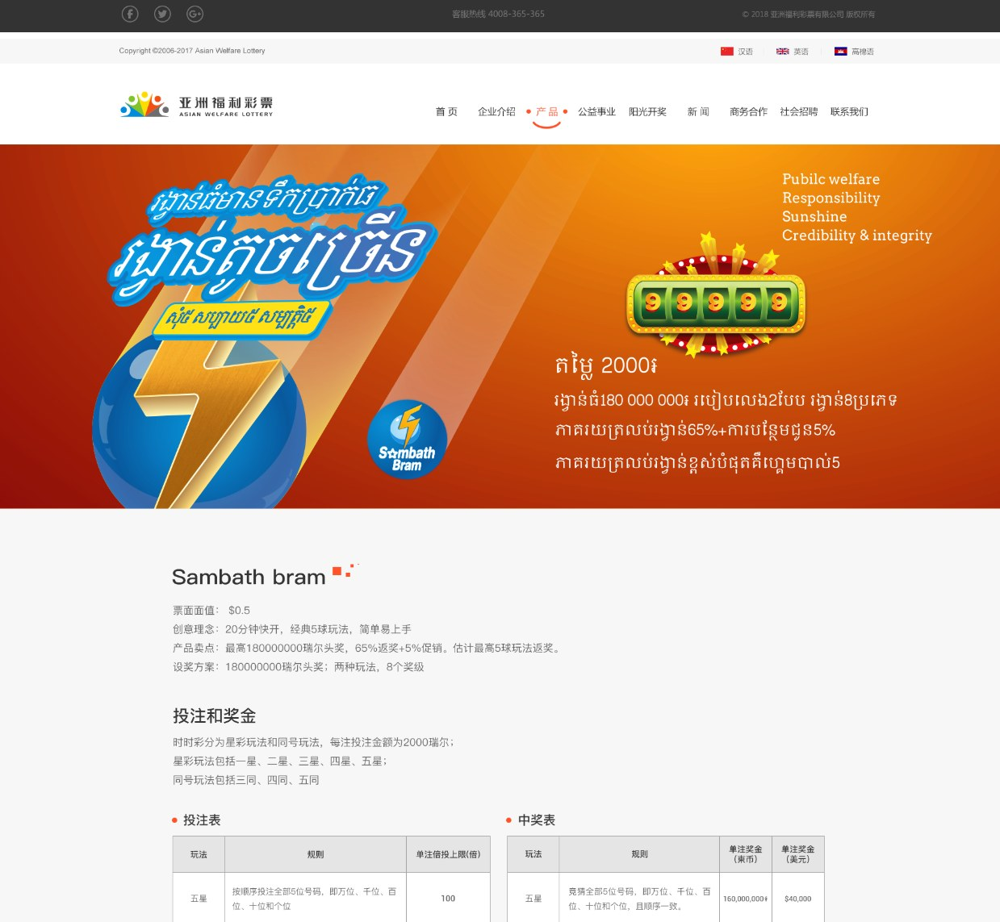

Lottery System Product and Source Materials
彩票系统源码资料
展示彩票产品的网站与 App 界面，包括语言入口和个人账户等页面，适合用于产品需求沟通和界面方案评估。项目说明提供产品资料与源码交付的联系入口。
简体中文产品介绍、功能说明、源码入口与截图繁體中文產品介紹、功能說明、原始碼入口與截圖EnglishProduct overview, source entry points and screenshots

展示彩票产品的网站与 App 界面，包括语言入口和个人账户等页面，适合用于产品需求沟通和界面方案评估。项目说明提供产品资料与源码交付的联系入口。
